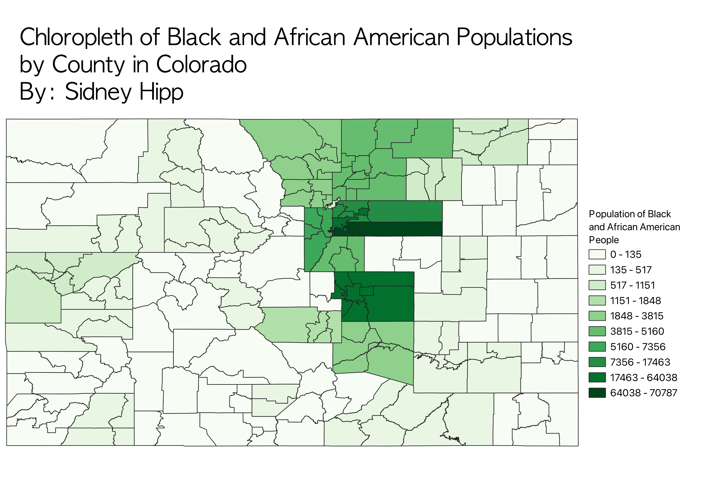

Homework 6: Census data choropleth
Sidney Hipp
My map displays a chloropleth of how many Black and African American people live in each county in Colorado. The darker the shade of green for each county, the more Black or African American people live there. My map is projected in ESPG 4269. I collected the data from the US census website.

Data used for this project
CSV dataset
Colorado Counties Vector GeoJSON